Kevin Chu · Fall 2026
Colorizing the Prokudin-Gorskii Photo Collection
Single-scale alignment
Prokudin-Gorskii photographed the same scene three times through blue, green, and red filters. Each scan contains those three grayscale exposures stacked vertically. Putting them together gives us color, but the exposures are slightly displaced. Without alignment, the edges would appear doubled or have colored fringes.
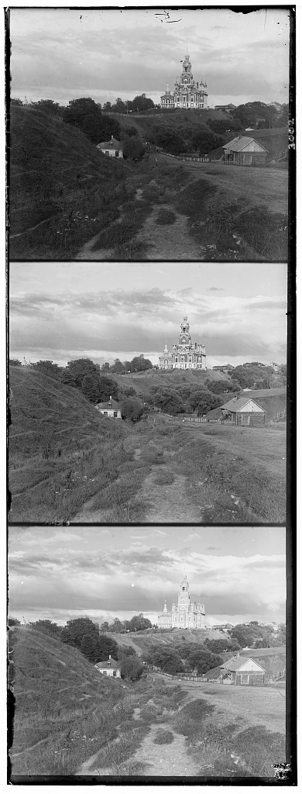
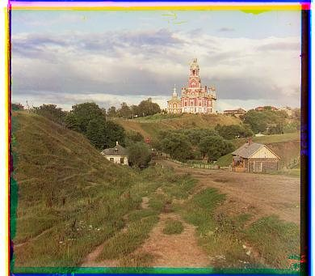
I first split each scan into three equal parts in B, G, R order. I kept blue fixed and searched for the horizontal and vertical shifts that best aligned green and red with it. For the small JPGs, I tried every combination of shifts from −15 to 15 pixels in both directions.
To choose the best shift, I used normalized cross-correlation (NCC). In the formula below, A contains pixel values from the shifted channel and B contains the corresponding pixel values from the blue channel.
NCC(A, B) = [(A − Ā) · (B − B̄)] / [‖A − Ā‖₂ ‖B − B̄‖₂]
Ā and B̄ are the average pixel values. I subtracted these averages and normalized both channels to make their brightness and contrast comparable for the NCC calculation. This lets NCC compare the light-and-dark patterns even if one exposure is brighter or has more contrast. A higher NCC score means a better match, so I chose the shift with the highest score.
One challenge was that the scans have bright and dark borders. Including these border pixels in the NCC score can make the algorithm line up the borders instead of the scene. I excluded border pixels when calculating NCC, excluding the border along each edge about 10% of the shorter image dimension and at least 15 pixels wide.
After finding the best shifts, I moved the original green and red channels and stacked them with blue in RGB order. Here are the three single-scale results. Each caption lists the green and red shifts relative to blue as (x, y): positive x moves right, and positive y moves down.


Pyramid alignment
The same search becomes expensive on the large TIFFs. Each comparison involves millions of pixels, and the channels can be displaced much farther than 15 pixels. Increasing the search window would mean testing too many more shifts on much larger images.
I used an image pyramid to find the shift in stages. First, I repeatedly resized both channels to half their size, smoothing during downsampling to avoid aliasing. Once either dimension was below 200 pixels, I ran the same ±15-pixel search on that small image. A large shift in the original scan becomes a small shift at this scale.
Then I worked back toward full resolution. At each level, I doubled the previous shift because the image was twice as large and applied that shift. Then, for any fine-tuning corrections to be made, I searched ±2 pixels for an additional shift and added it to the previous shift. I repeated this process recursively until I reached full resolution. The smaller images help find the overall shift, and fine-tuning on the larger images makes that shift more accurate. (During fine-tuning, I also excluded border pixels.)
I used NCC with the same search and border exclusions settings for every image. Below are all 14 provided results. The pyramid agrees with single-scale alignment on the three JPGs. Direct NCC fails on Emir, which I explain and improve at the end.
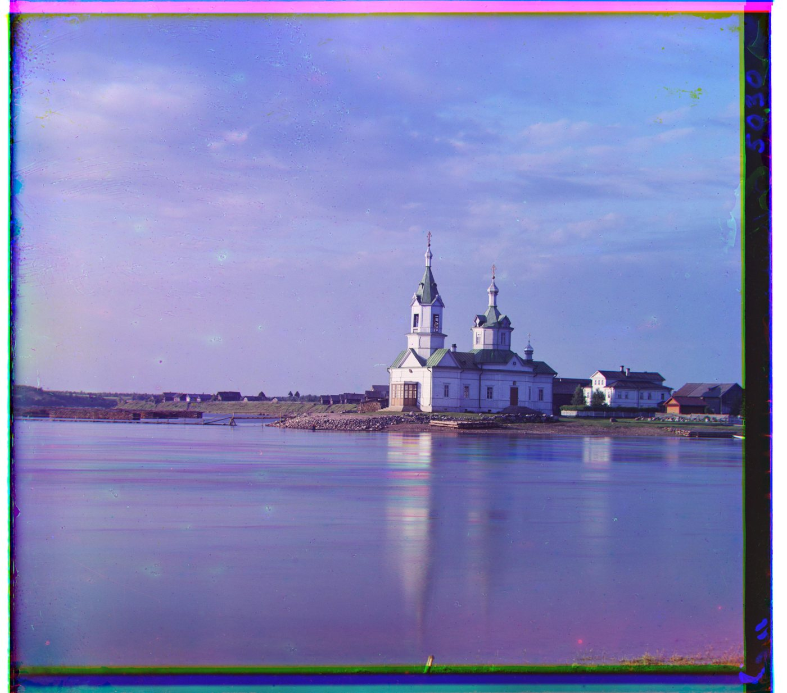
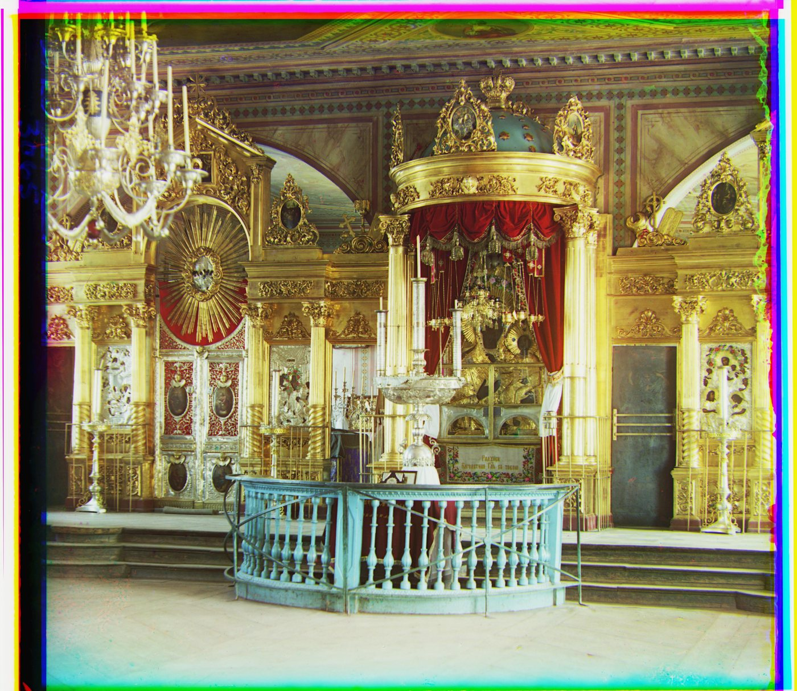
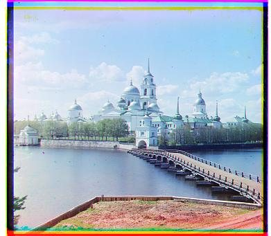
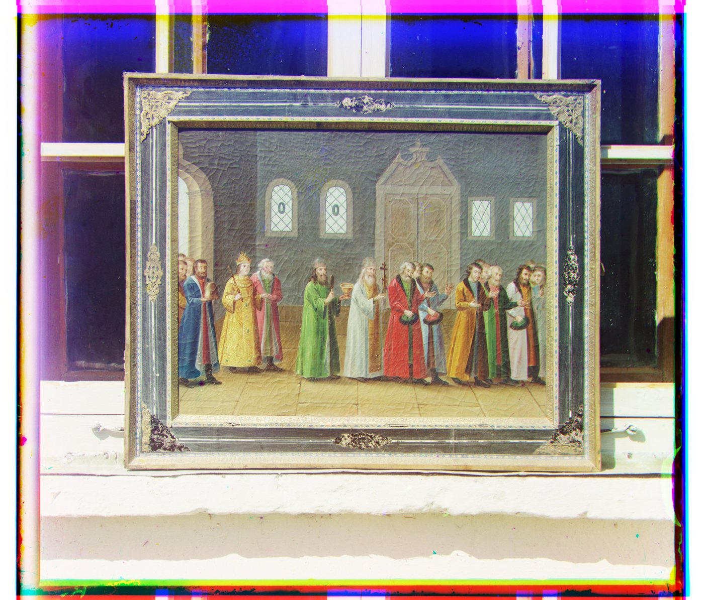
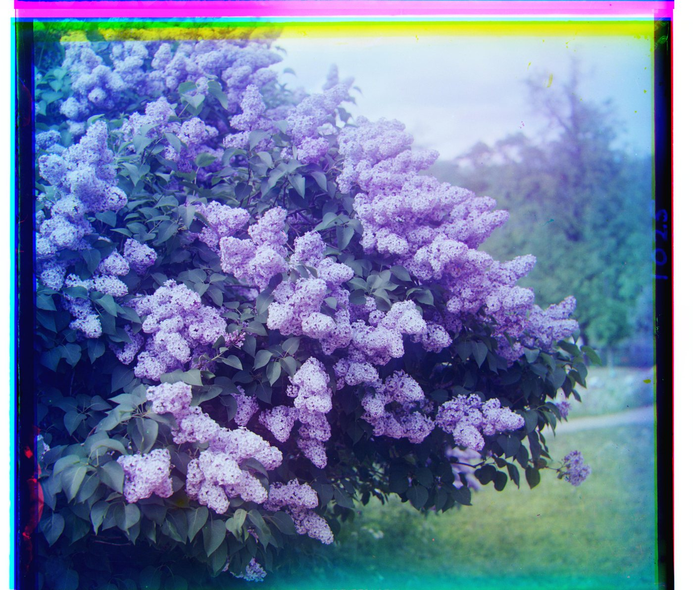
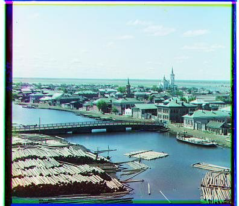
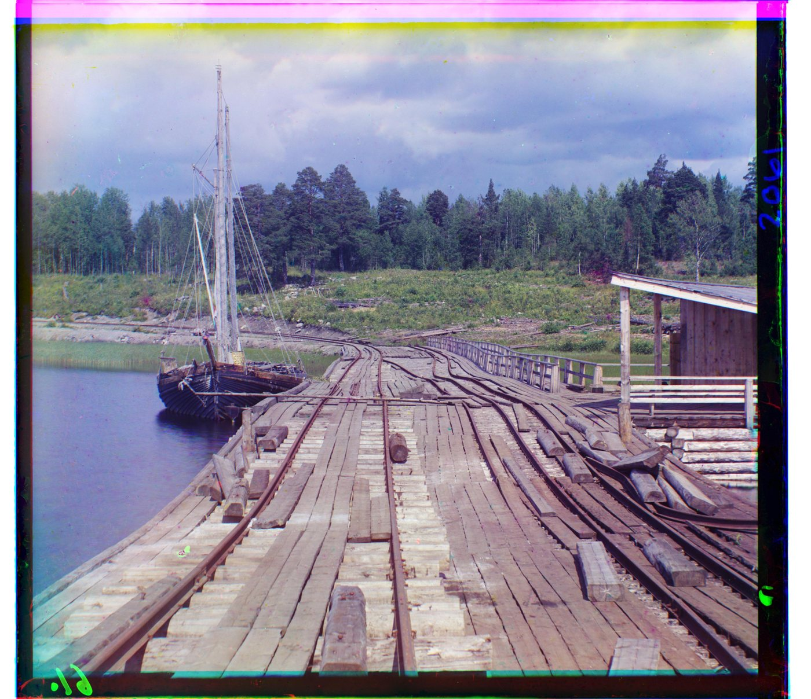
Three more images
I also ran the same pyramid algorithm on three additional full-resolution plates from the Library of Congress: a landscape, a portrait, and a locomotive. The titles link to their original records.
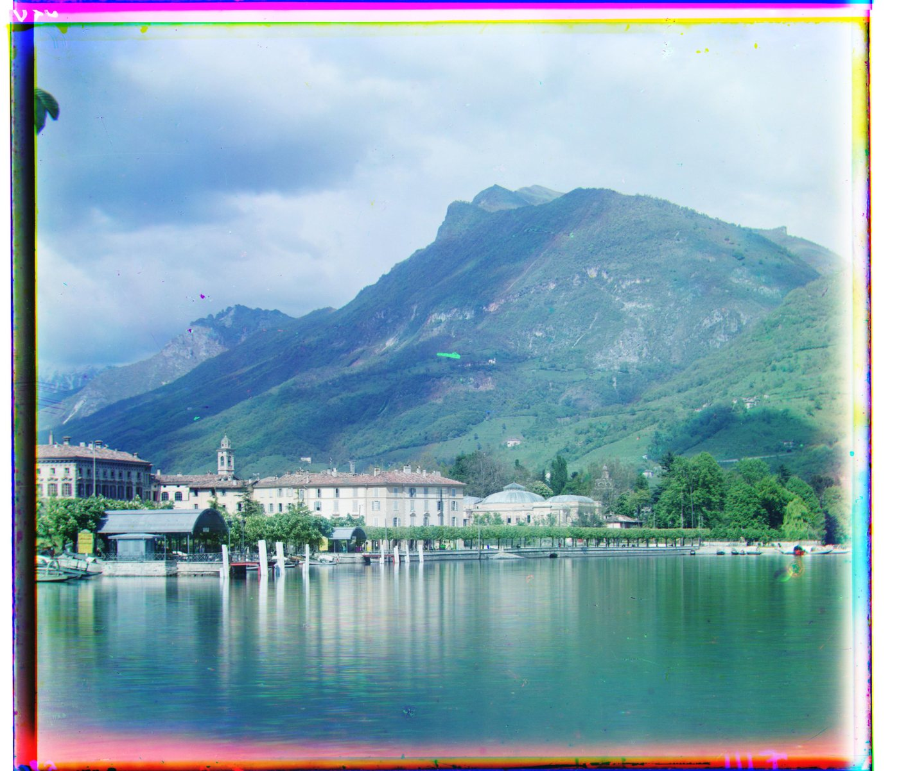
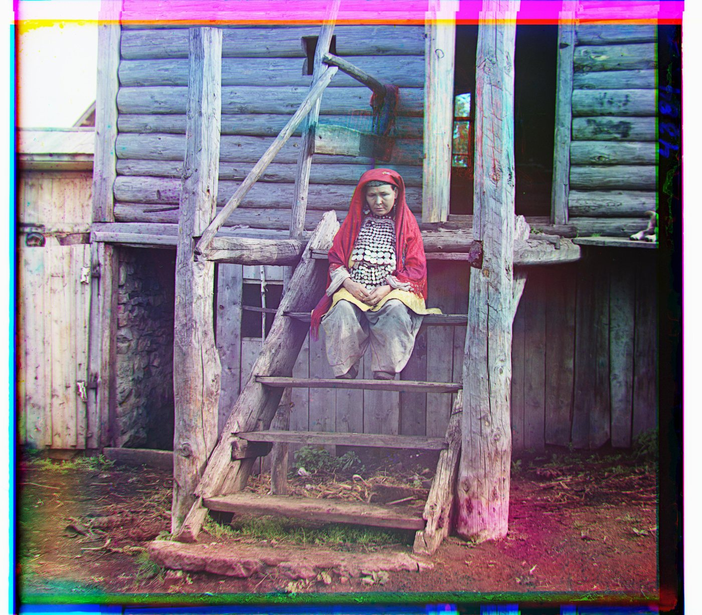
Fixing Emir
Here are the three grayscale exposures from Emir’s original glass plate. His robe looks bright in the blue exposure and dark in the red exposure.
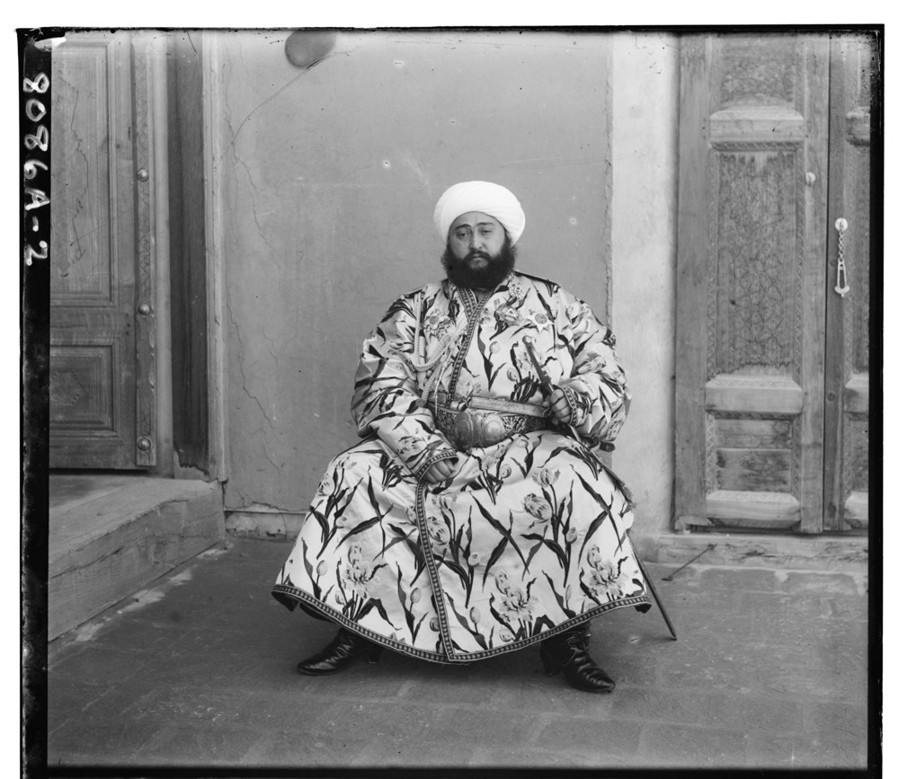
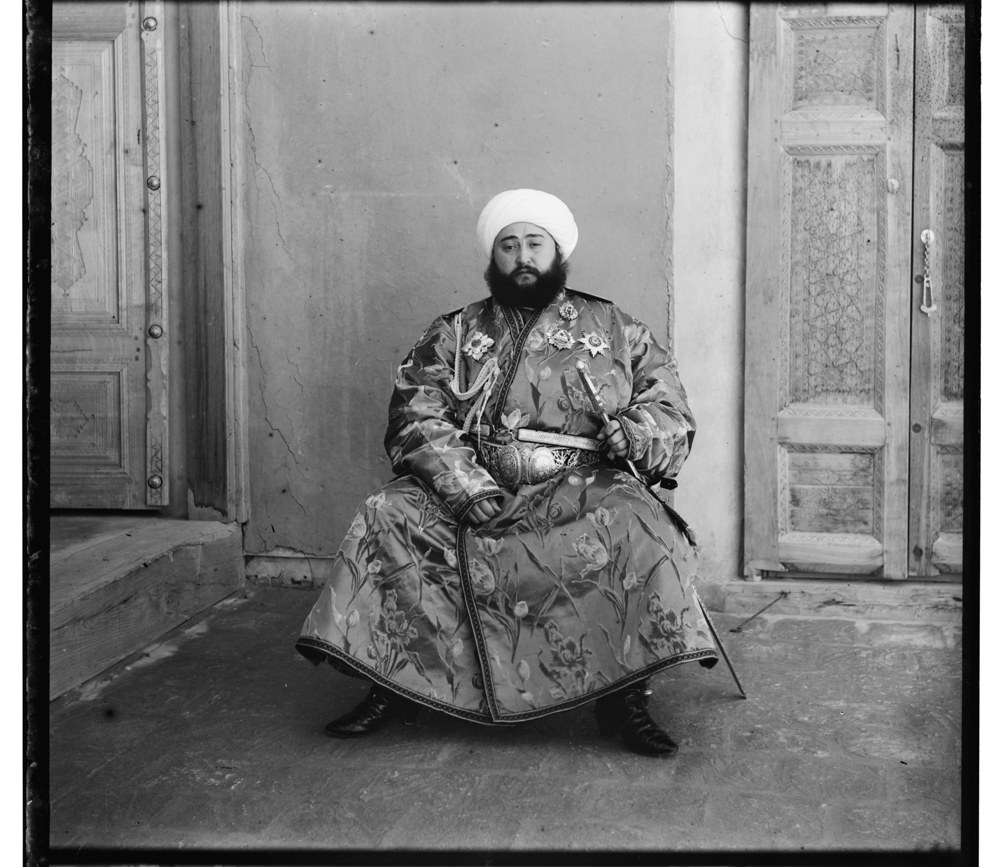
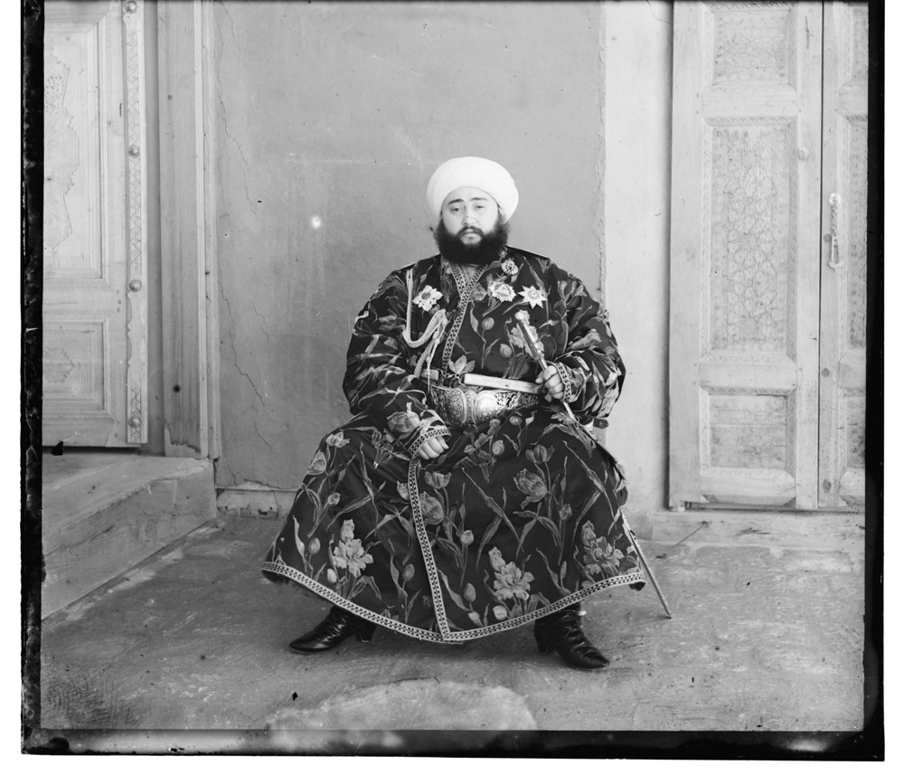
NCC can handle an overall brightness change, but here the robe changes brightness differently from the rest of the scene. The red and blue exposures do not preserve the same light-and-dark pattern. Direct red-to-blue NCC selected a large incorrect shift, producing the double image shown below.
I tried changing the reference while keeping the same pyramid search and NCC score. First, align red to the original green channel. Then align green to blue and move the already-aligned red along with it. In code, I add the red-to-green and green-to-blue shifts to get red’s final shift relative to blue.
Red and green matched better for this image. The final red shift changed from (−483, 400) to (41, 106), removing the large double image. Green’s shift remained (24, 49). Both final shifts still use blue as the reference.
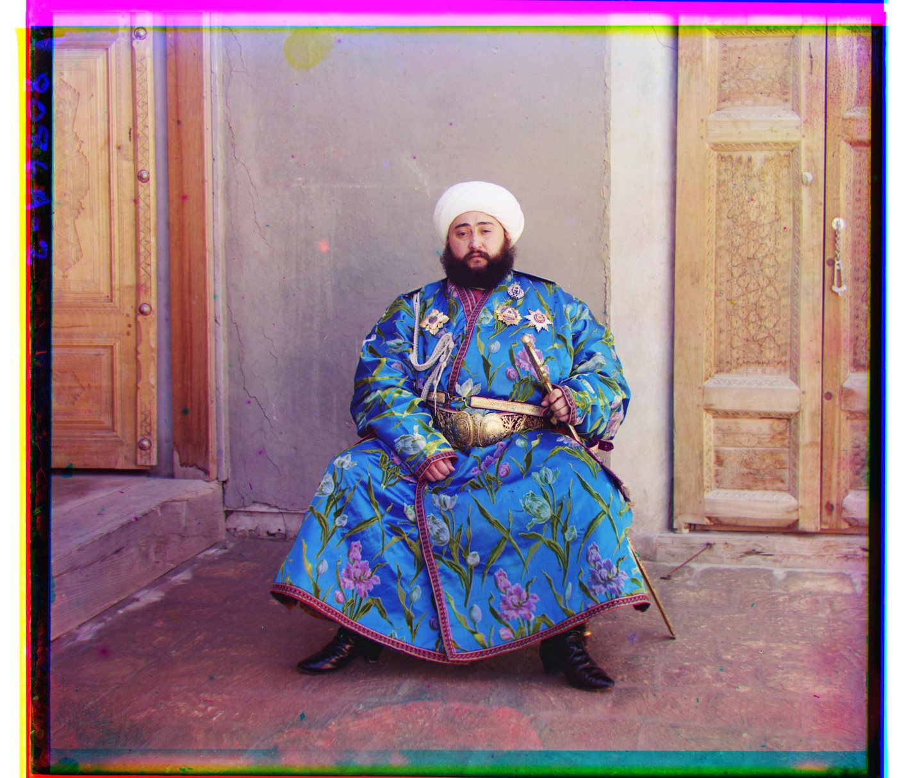